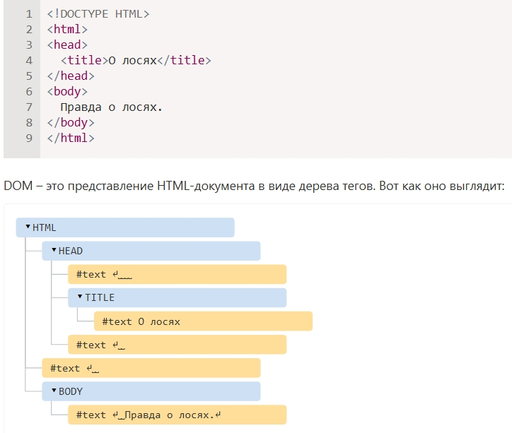

Каждый тег HTML-документа является объектом, вложенные теги являются детьми родительского элемента, текст внутри тега является объектом. Доступ из JS к объектам документа:
document.body.style.background = 'red'; // сделать фон красным
setTimeout(() => document.body.style.background = '', 3000); // вернуть назад
Пример того, как выглядят графически теги вложенные друг в друга и составлляющие HTML-документ:

Если браузер сталкивается с некорректно написанным HTML-кодом, он автоматически корректирует его при построении DOM. Например, в начале документа всегда должен быть тег <html>. Даже если его нет в документе – он будет в дереве DOM, браузер его создаст. То же самое касается и тега
. Например, если HTML-файл состоит из единственного слова "Привет", браузер обернёт его в теги <html> и <body>, добавит необходимый тег <head>,Другие типы узлов, например комментарий:
<!-- комментарий -->
Они так же являются частью DOM.
Можно открыть консоль разработчика и посмотреть всё дерево dom, посмотреть отдельные элементы дерева dom
При помощи консоли, расположенной внизу инструментов разработчика можно менять параметры элементов, например
задавать им цвет:
$0.style.background = 'red'. Так же правая кнопка мыши на элементе позволяет посмотреть
контекстное меню и произвести разные действия.
Так же консоль позволяет вводить в себя например document.body и инспектировать все элементы этого объекта.
По сути инструменты разработчика и консоль в частности представляет собой инструмент дебага dom и js.
Dom это представление HTML-документа в виде иерархической структуры. Комментарии так же являются частью dom.
Инструменты разработчика браузера - гибкий и мощный инструмент для изменения и отладки.
Подробную документацию по инструментам разработки Chrome Developer Tools можно найти на странице https://developers.google.com/web/tools/chrome-devtools.